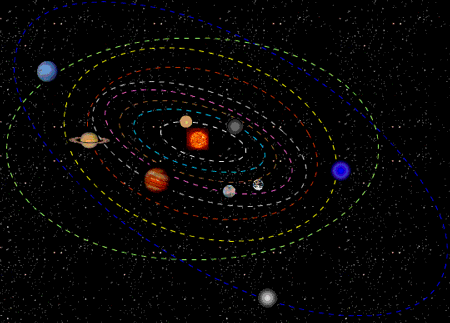

Los planetas del sistema solar

Los planetas del sistema solar son (en orden de cercanía al Sol): Mercurio, Venus, Tierra, Marte, Júpiter, Saturno, Urano y Neptuno. Plutón, que antes se consideraba un planeta, forma parte hoy de los 5 planetas enanos reconocidos del sistema solar, junto a Ceres, Haumea, Makemake y Eris.
Mercurio es un planeta rocoso con gran cantidad de cráteres. La gravedad en Mercurio es de 3,7 m/s²; es decir,los objetos pesan 62% menos que en la Tierra.Mercurio es el planeta más cercano al Sol y tiene un tamaño un poco mayor a la Luna de la Tierra, lo que lo hace el más pequeño de los 8 planetas que conforman el sistema solar. No posee satélites.